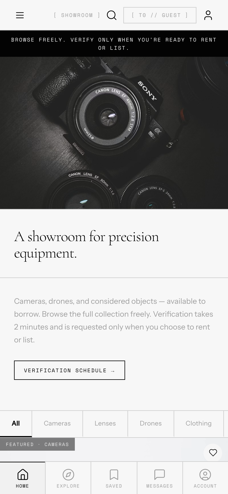
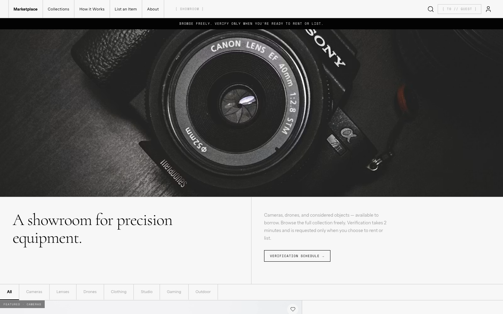
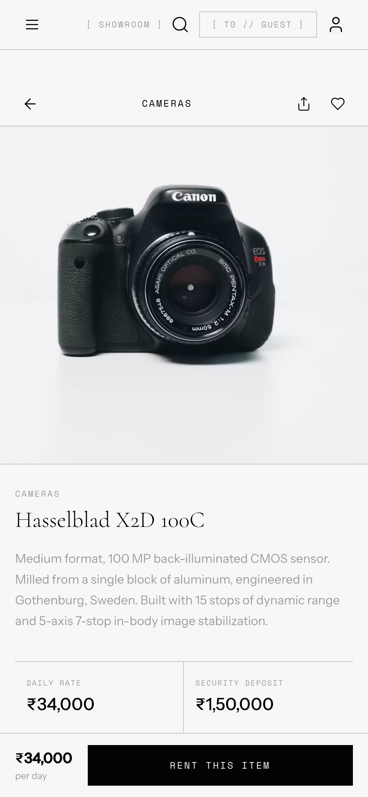
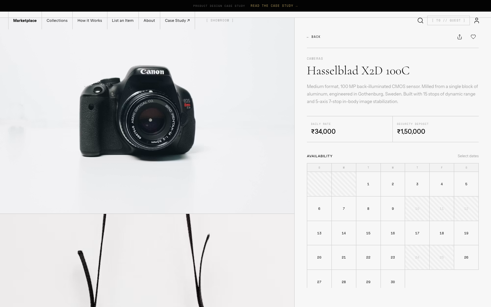
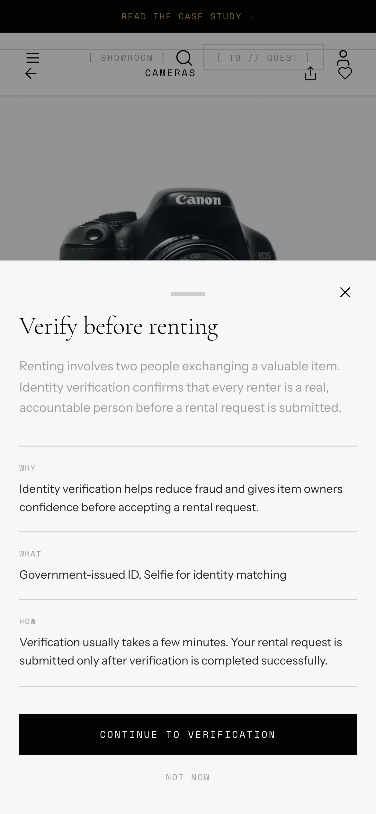
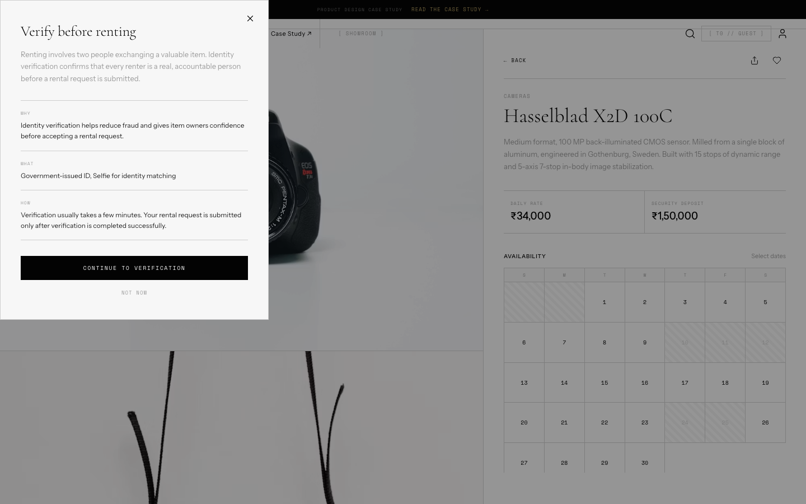
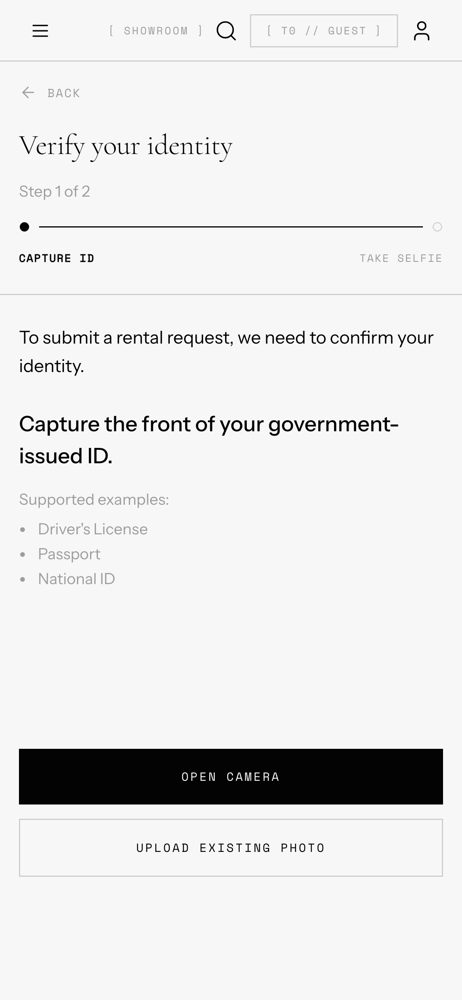
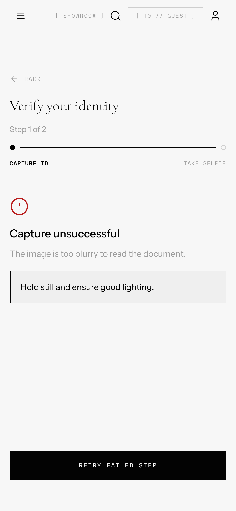
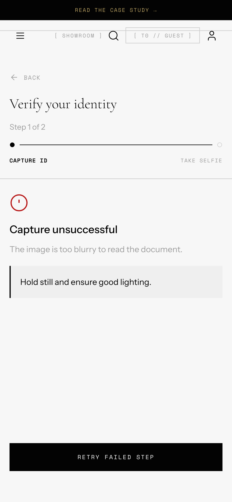

Four screens, each existing because of a specific decision made above.
Every screen exists because of a specific decision made above — not because it's a standard step in an onboarding flow.
Marketplace Home
Tier 0 in practice — full access, no verification, trust shown through specific facts (rental count, response time) rather than badges.


Item Details
The exact decision point where verification enters. Everything before this moment stays frictionless.


Verification Gate
One reusable component across all three tiers, so users learn a single pattern once. Tier 2 is triggered at "Publish Listing" rather than "List Item" — after the form is complete, concentrating verification at the strongest point of user intent.


Identity Verification
Capture, failure recovery, processing, and success as states within one flow, not separate screens. High-value listings use this same gate with escalated review copy (Tier 3) — a dedicated review screen wasn't built separately, since the gate already demonstrates the escalation model; only what's asked and reviewed changes, not the interaction pattern.


